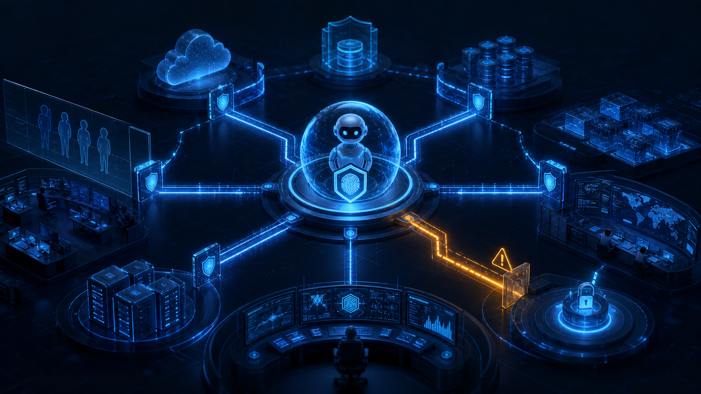

The Next Insider Threat May Not Be Human. It May Be an AI Agent.
The next insider may not have an employee ID, a keyboard or even a heartbeat. It may be an AI agent with more authority than the organisation intended.

For years, cybersecurity teams have viewed insider threats through a human lens.
A privileged employee. A careless administrator. A malicious contractor. An engineer with excessive access.
But the definition of an insider is changing.
The next insider may not have an employee ID, a keyboard or even a heartbeat. It may be an AI agent.
AI Agents Are Becoming Privileged Insiders
AI agents are increasingly capable of carrying out complex tasks with minimal human intervention. They can enumerate systems, search for sensitive files, execute commands and make decisions based on their objectives. When given sufficient permissions, they begin to resemble another privileged user inside the enterprise rather than just another software application.
This changes how security architects should think.
The biggest risk is not that AI becomes intelligent enough to attack us.
The bigger risk is that we grant an AI agent more authority than we intended.
Permission Is The Real Risk
An AI agent does not become dangerous because it is malicious. It becomes dangerous because it faithfully executes the permissions it has been given.
That should sound familiar.
This is exactly why we apply least privilege to administrators, service accounts and privileged access. As discussed in The Real Risk of AI Coding Agents Is Not Intelligence. It Is Permission., capability becomes exposure when an agent can access, execute or change more than its task requires.
AI agents should be governed no differently.
Treat Every AI Agent As A Non-Human Privileged Identity
Every AI agent should have:
- A unique identity.
- Clearly defined permissions.
- Limited access to only the resources it needs.
- Comprehensive logging and monitoring.
- The ability to revoke its access immediately.
In other words, an AI agent should be treated as a non-human privileged identity.
This is where traditional cybersecurity principles become even more relevant. Zero Trust was never about trusting people; it was about continuously verifying every identity that requests access. AI agents simply become another identity that must be authenticated, authorised and monitored.
That is why The New Security Perimeter Is No Longer the Network. It Is Identity. An agent's access must be governed through its identity, permissions, context and behaviour—not its location inside a trusted network.
Govern Authority, Not Intelligence
AI itself is not the problem. An AI agent pursues the objective it has been assigned. If its permissions exceed the intended objective, the consequences may also exceed expectations.
Security teams therefore need to stop asking:
“Can this AI agent perform the task?”
Instead, they should ask:
“Should this AI agent be allowed to perform the task?”
That is an identity governance question, not an artificial intelligence question. It is also an architecture question: Security Architecture Is Where Trust, Controls and Resilience Come Together, including the trust granted to autonomous identities and the containment required when that trust fails.
Established Security Principles Still Apply
The rise of AI agents does not invalidate decades of cybersecurity principles. It reinforces them.
Authentication. Authorisation. Least privilege. Segregation of duties. Continuous monitoring. Identity governance.
These remain the foundations of digital trust, whether the identity belongs to a human or an AI.
Final Thought
The next insider threat may not be human.
It may be an AI agent acting exactly as it was permitted to do.
The organisations that recognise this early will not just deploy AI more safely; they will build the trust architecture required for the next generation of autonomous systems.
Question assumptions. Share knowledge. Build trust.